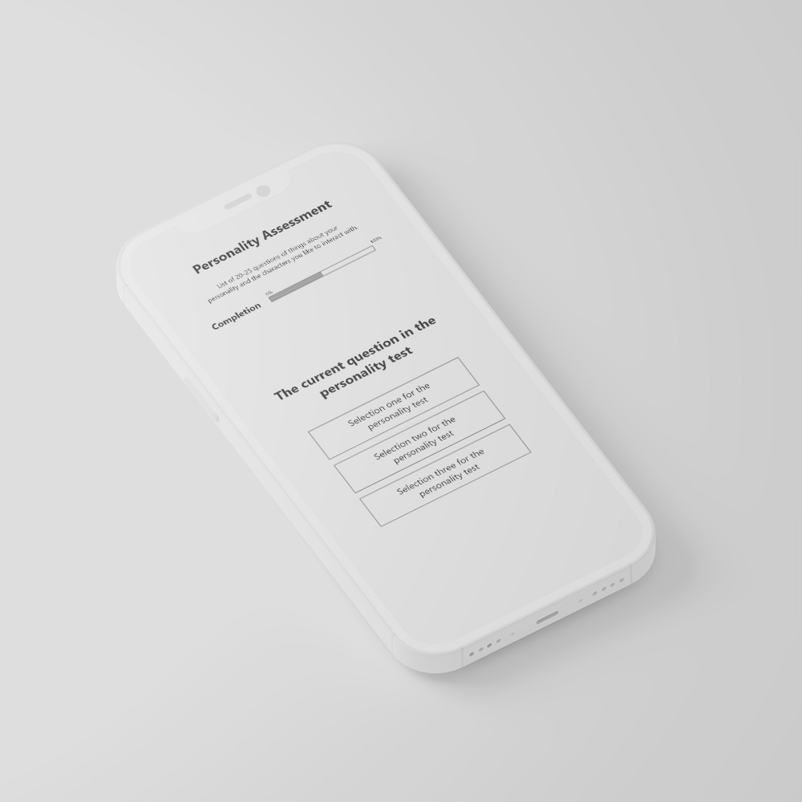
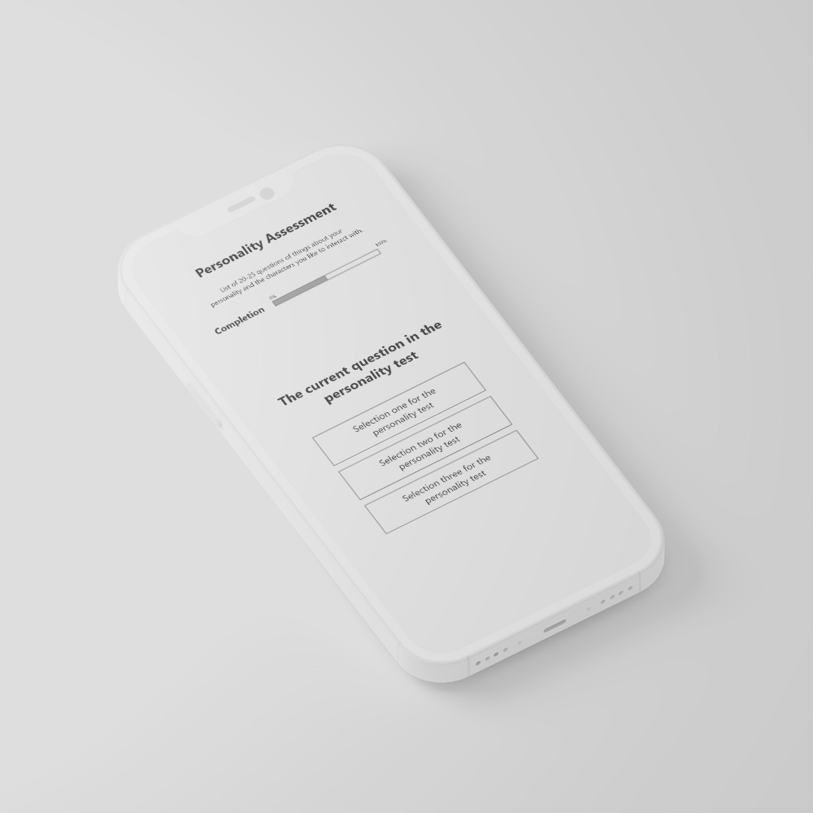
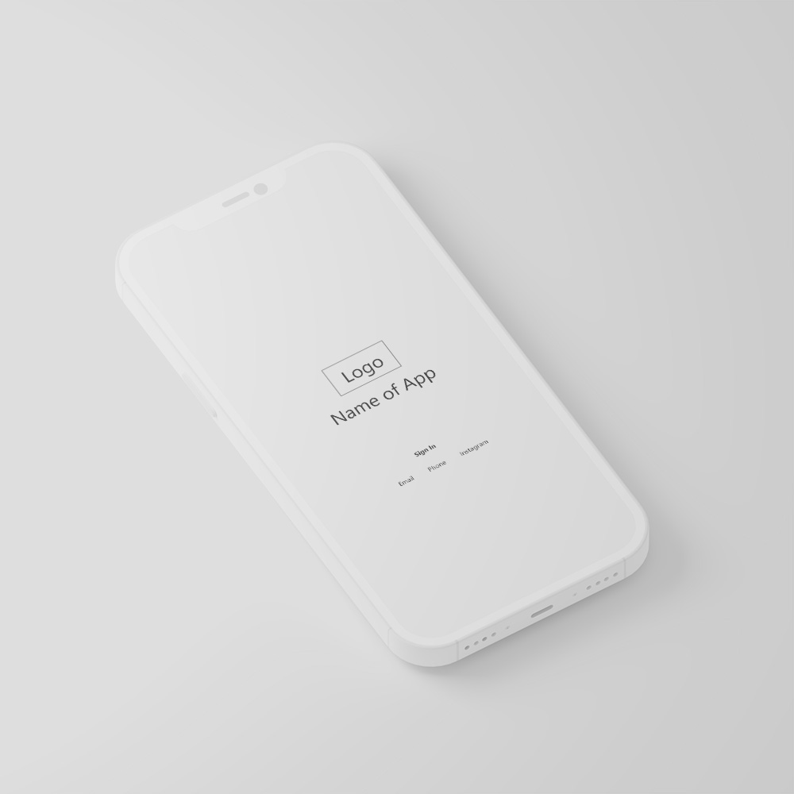
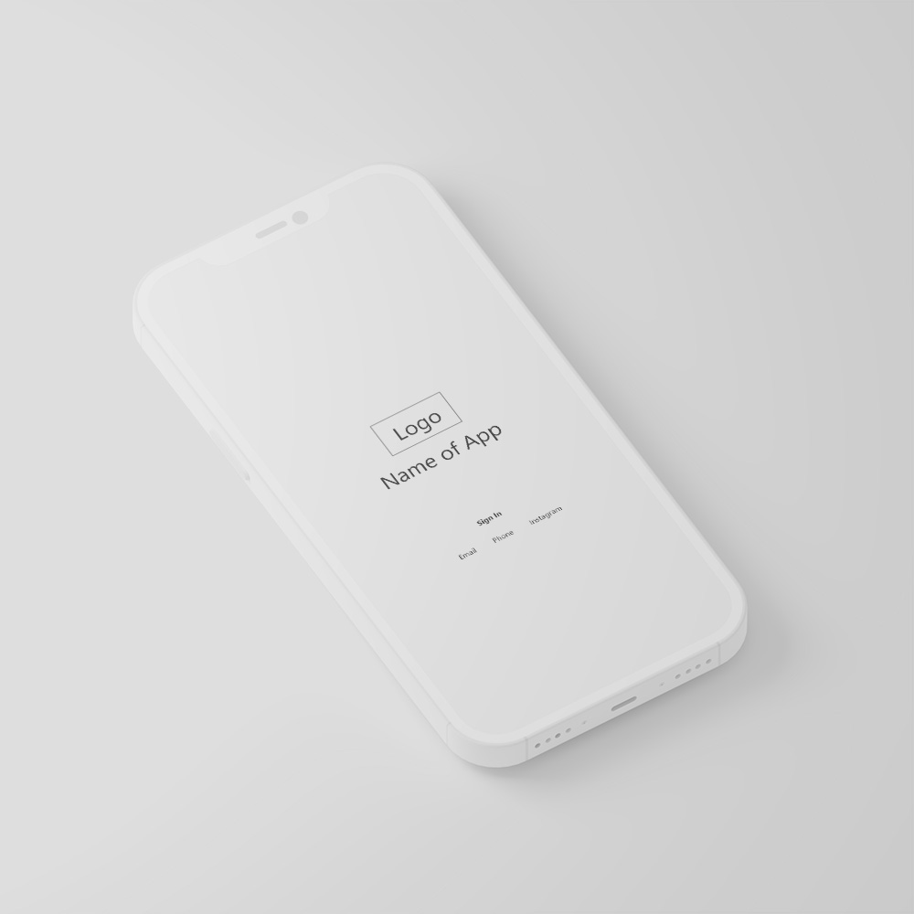
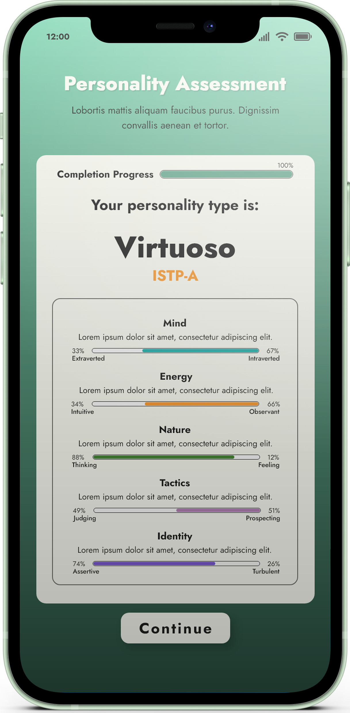
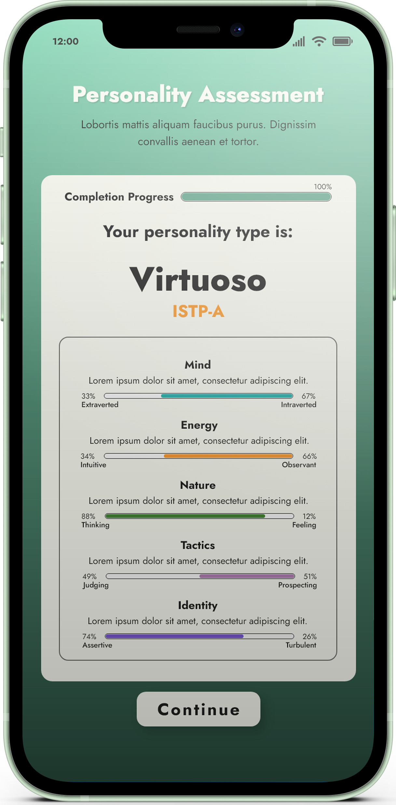

Since I primarily designed this app for myself, I wanted something that searched deeper into a person’s personality. From the comparative market analysis, the apps chosen did not dive deep enough into the personality aspect, nor did they have an in depth preference system. These were necessities for me. For a 25 year old that is skeptical, does not like to go out much, enjoys practical things, silence, woodworking and operates as an introvert; I very much like the idea of a system taking this information and matching me to others who can resonate. This is my approach.


 

 

 
